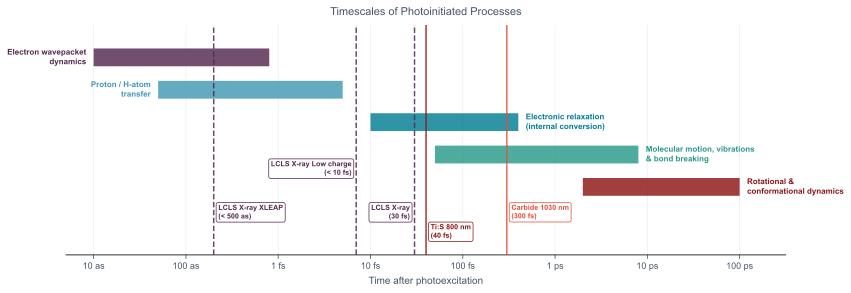

        <section>
          <h3 style="margin: 0 0 0.35em;">LCLS in Context</h3>
          
          <div style="display: flex; gap: 1em; align-items: center; margin-top: 0.4em;">
            <div style="flex: 1; font-size: 0.42em;">
              <div class="col-box" style="border: 1px solid #ddd; border-radius: 8px; padding: 0.5em 0.9em;">
                <ul style="margin: 0; padding-left: 1.2em;">
                  <li>Need a source of tunable laser pulses in the 1–10 fs region</li>
                  <li>Can we resolve the photophysics of small alkenes?</li>
                </ul>
              </div>
            </div>
            
          </div>
          <aside class="notes">
            <ul>
              <li>Electron wavepacket dynamics and core-hole decay occur on attosecond timescales — beyond the reach of even compressed fs pulses, but set the context for why we push toward shorter pulses.</li>
              <li>Proton transfer (e.g. in photoacids, DNA bases) occurs on a 1–20 fs timescale — accessible with 10 fs pulses but not with 100 fs pulses.</li>
              <li>Electronic relaxation (S2→S1 internal conversion) in organic chromophores is typically 10–500 fs — the prime target for ultrafast spectroscopy at LCLS.</li>
              <li>Molecular vibrations and IVR span 100 fs to a few ps; nuclear structural changes (bond breaking, isomerisation) from a few hundred fs to 10 ps.</li>
              <li>.The grey bands marks the typical amplifier/ OPA output associated with the two dominant ultrafast laser technologies — it misses proton transfer and fast electronic dynamics entirely.</li>
            </ul>
          </aside>
        </section>
